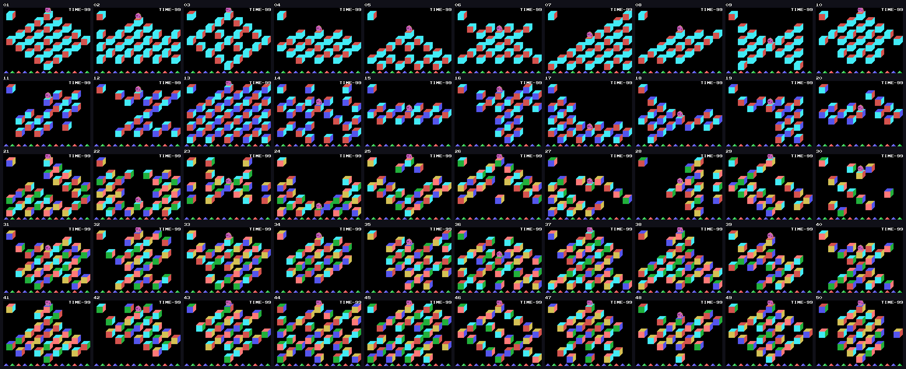
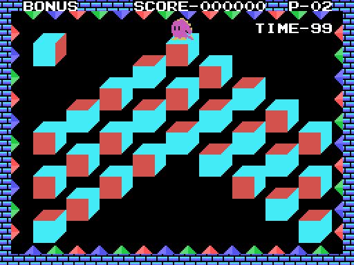
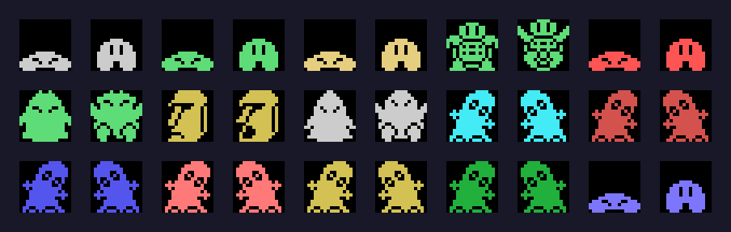
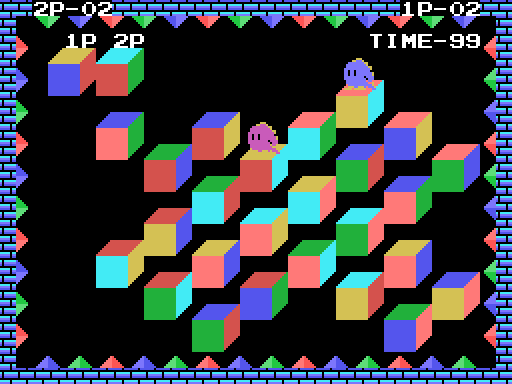

Q\*bert salta de cubo en cubo por una pirámide vista en perspectiva. En esta versión de MSX los cubos no cambian de color: ruedan, y la fase se acaba cuando hay cinco cubos acabados en línea.

Cada fase es una cuadrícula de 9 × 9 casillas (0x97DB, 81 bytes por fase). Una casilla vale 0xFF si no hay cubo, o el número de uno de los 24 giros de un cubo con sus caras pintadas. Los cubos se colocan de tres en tres columnas y de dos en dos filas, así que en pantalla forman una pirámide, un rombo, una X o lo que diga la fase.
La casilla 0, arriba a la izquierda, es el modelo: el cubo tal como hay que dejar los demás. Un cubo está acabado cuando enseña las mismas tres caras que el modelo (la de arriba y las dos de lado, 0x722F); entonces se pinta con el dibujo de cubo acabado.
Hay tres estilos de cubos (0xA7FE): uno para las fases 1 a 10, otro para las 11 a 20 y otro para las 21 a 50.
Q\*bert solo salta en diagonal: hay que pulsar dos direcciones a la vez (arriba-izquierda, arriba-derecha, abajo-izquierda o abajo-derecha, 0x6C90). Cada salto sube o baja una fila y avanza una columna. Al posarse, el cubo de debajo rueda en la dirección del salto (0x72C0): la misma dirección desde el mismo giro da siempre el mismo giro nuevo, y cualquier giro se alcanza desde cualquier otro en cuatro saltos como mucho.
Saltar fuera de la pirámide, o sobre las casillas de los modelos, es caer.
Con cinco cubos acabados seguidos en una fila, una columna o una diagonal de la cuadrícula; los huecos sin cubo no cortan la línea (0x7421). Hace falta una línea hasta la fase 30, dos de la 31 a la 40 y tres de la 41 a la 50 (0x737D). No hace falta acabar todos los cubos.
Al acabarla, Q\*bert salta seis veces, el marco cambia de color y el tiempo que sobra se cobra a 10 puntos por segundo.
0x7829); por debajo de 10 suena el aviso. A cero, TIME OVER.P- enseña las de reserva. Hay vida extra a los 10.000 puntos, a los 60.000, a los 110.000… (el umbral sube 5 en el byte alto de la puntuación, 0x450D), y una vida escondida (ver Hallazgos).En el GAME OVER, F5 es el CONTINUE: la misma fase con tres vidas y la puntuación a cero. F1 pausa mientras suena la música de la fase.
El menú ofrece LEVEL 1 a LEVEL 5: se empieza en la fase 1, 11, 21, 31 o 41 (0x65E3). De la fase 50 se vuelve a la 1.
Tras las fases 3, 6 y 10 de cada decena llega la bonificación: Q\*bert se queda quieto sobre cada cubo, las diagonales lo giran y al acabarlo pasa al siguiente; al final cada cubo acabado vale 100, 200, 300… y con los 27, PERFECT 5000 POINT (0x789D).

Por la pirámide caen quince objetos (0x6456), cada uno con su espera y según la dificultad (0x64DB):
| objeto | dibujo | qué hace al tocarlo |
|---|---|---|
| 4 | bola gris | los bichos huyen |
| 5 | bola verde | todo se congela un rato menos los Q\*bert |
| 6 | bola amarilla | un paso más de salto por cuadro: más rápido |
| 7 | tortuga | un paso menos |
| 8 | bola roja | el salto largo (dos filas, con el disparo) y Q\*bert en blanco |
| 9 | el que gira cubos | 100 puntos; mientras anda, gira los cubos que deja |
| 10 | moái | mata; baja botando |
| 11 | encapuchado | mata; persigue a Q\*bert |
| 12-17 | seis bichos de colores | matan; se quedan en los cubos cuya cara de arriba es de su color |
| 18 | bola azul | invencibilidad: los que matan caen al tocarlos |

Con 2PLAYERS los dos juegan a la vez, cada uno con su modelo (las casillas 0 y 1, con 1P y 2P encima). El segundo usa el mando 2 o las teclas E, S, F, C y CTRL. Se juega a 3 o a 5 partidas (0xECB8), en fases de la 31 a la 50 al azar. Una partida la gana el primero que hace línea; si se acaba el tiempo, el que más cubos tiene; y con empate, o si caen los dos sin vidas, se decide a piedra, papel o tijera.

Se alternan dos: un jugador en la fase 34 y dos a la vez en la 37, con las pulsaciones grabadas de 0x6BBF y 0x6BD8.